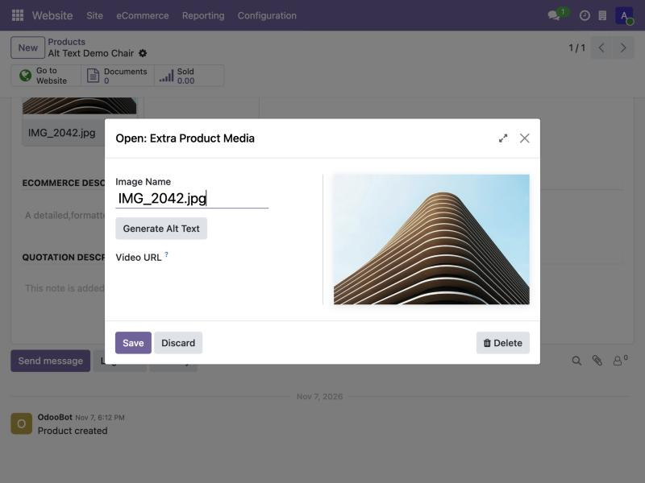

Adds a Generate Alt Text button to the extra images of your products, and lists them in the Bulk Alt Text screen of Alt Text Generator AI. Odoo uses an extra image's name as its alt text on the shop, so the generated description is exactly what search engines and screen readers read on your product page.
This add-on installs automatically when Alt Text Generator AI and Website Sales are both installed. You need an API key from alttextgeneratorai.com, added in Settings > Alt Text Generator AI.
Images are sent to alttextgeneratorai.com only when you press a Generate button. Privacy policy.
